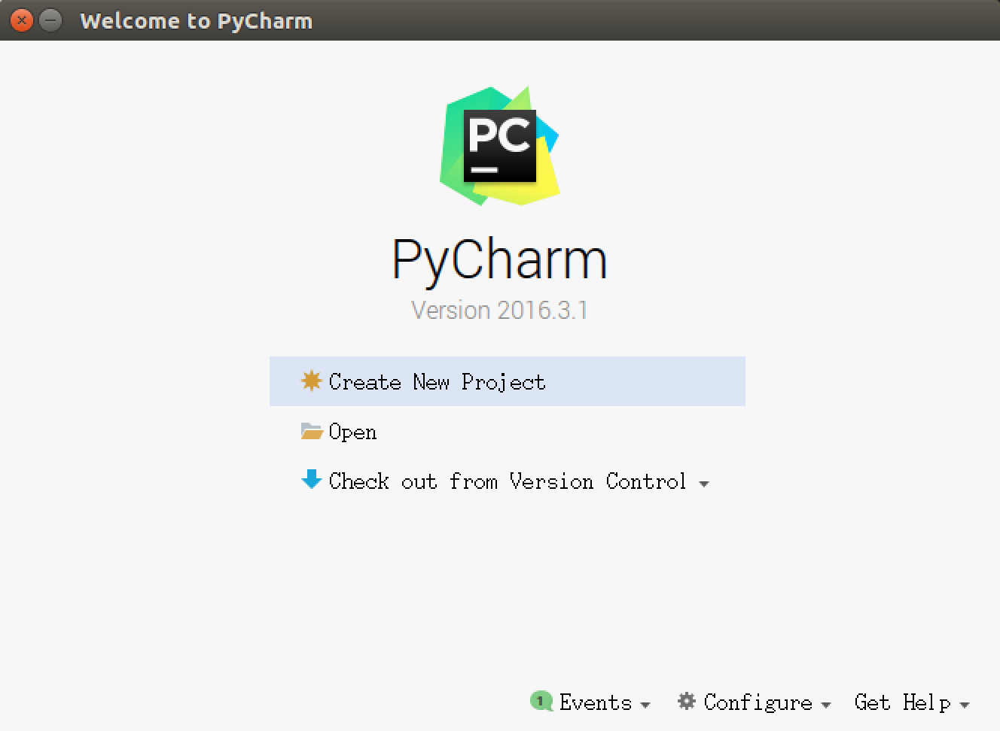

1. 认识 Python
人生苦短，我用 Python —— Life is short, you need Python

目标
- Python 的起源
- 为什么要用 Python？
- Python 的特点
- Python 的优缺点
01. Python 的起源
Python 的创始人为吉多·范罗苏姆（Guido van Rossum）

- 1989 年的圣诞节期间，吉多·范罗苏姆为了在阿姆斯特丹打发时间，决心开发一个新的解释程序，作为 ABC 语言的一种继承（感觉下什么叫牛人）
- ABC 是由吉多参加设计的一种教学语言，就吉多本人看来，ABC 这种语言非常优美和强大，是专门为非专业程序员设计的。但是 ABC 语言并没有成功，究其原因，吉多认为是非开放造成的。吉多决心在 Python 中避免这一错误，并获取了非常好的效果
- 之所以选中 Python（蟒蛇） 作为程序的名字，是因为他是 BBC 电视剧——蒙提·派森的飞行马戏团（Monty Python’s Flying Circus）的爱好者
- 1991 年，第一个 Python 解释器 诞生，它是用 C 语言实现的，并能够调用 C 语言的库文件
1.1 解释器（科普）
计算机不能直接理解任何除机器语言以外的语言，所以必须要把程序员所写的程序语言翻译成机器语言，计算机才能执行程序。将其他语言翻译成机器语言的工具，被称为编译器
编译器翻译的方式有两种：一个是编译，另外一个是解释。两种方式之间的区别在于翻译时间点的不同。当编译器以解释方式运行的时候，也称之为解释器

- 编译型语言：程序在执行之前需要一个专门的编译过程，把程序编译成为机器语言的文件，运行时不需要重新翻译，直接使用编译的结果就行了。程序执行效率高，依赖编译器，跨平台性差些。如 C、C++
- 解释型语言：解释型语言编写的程序不进行预先编译，以文本方式存储程序代码，会将代码一句一句直接运行。在发布程序时，看起来省了道编译工序，但是在运行程序的时候，必须先解释再运行
编译型语言和解释型语言对比
- 速度 —— 编译型语言比解释型语言执行速度快
- 跨平台性 —— 解释型语言比编译型语言跨平台性好
1.2 Python 的设计目标
1999 年，吉多·范罗苏姆向 DARPA 提交了一条名为 “Computer Programming for Everybody” 的资金申请，并在后来说明了他对 Python 的目标：
- 一门简单直观的语言并与主要竞争者一样强大
- 开源，以便任何人都可以为它做贡献
- 代码像纯英语那样容易理解
- 适用于短期开发的日常任务
这些想法中的基本都已经成为现实，Python 已经成为一门流行的编程语言
1.3 Python 的设计哲学
- 优雅
- 明确
- 简单
- Python 开发者的哲学是：用一种方法，最好是只有一种方法来做一件事
- 如果面临多种选择，Python 开发者一般会拒绝花俏的语法，而选择明确没有或者很少有歧义的语法
在 Python 社区，吉多被称为“仁慈的独裁者”
02. 为什么选择 Python？
- 代码量少
- ……
同一样问题，用不同的语言解决，代码量差距还是很多的，一般情况下
Python是Java的 1/5，所以说 人生苦短，我用 Python
03. Python 特点
- Python 是完全面向对象的语言
- 函数、模块、数字、字符串都是对象，在 Python 中一切皆对象
- 完全支持继承、重载、多重继承
- 支持重载运算符，也支持泛型设计
- Python 拥有一个强大的标准库，Python 语言的核心只包含 数字、字符串、列表、字典、文件 等常见类型和函数，而由 Python 标准库提供了 系统管理、网络通信、文本处理、数据库接口、图形系统、XML 处理 等额外的功能
- Python 社区提供了大量的第三方模块，使用方式与标准库类似。它们的功能覆盖 科学计算、人工智能、机器学习、Web 开发、数据库接口、图形系统 多个领域
面向对象的思维方式
- 面向对象 是一种 思维方式，也是一门 程序设计技术
- 要解决一个问题前，首先考虑 由谁 来做，怎么做事情是 谁 的职责，最后把事情做好就行！
- 对象 就是 谁
- 要解决复杂的问题，就可以找多个不同的对象，各司其职，共同实现，最终完成需求
04. Python 的优缺点
4.1 优点
- 简单、易学
- 免费、开源
- 面向对象
- 丰富的库
- 可扩展性
- 如果需要一段关键代码运行得更快或者希望某些算法不公开，可以把这部分程序用
C或C++编写，然后在Python程序中使用它们
- 如果需要一段关键代码运行得更快或者希望某些算法不公开，可以把这部分程序用
- ……
4.2 缺点
- 运行速度
- 国内市场较小
- 中文资料匮乏
2. 第一个 Python 程序
目标
- 第一个
HelloPython程序 Python 2.x与3.x版本简介- 执行
Python程序的三种方式- 解释器 ——
python/python3 - 交互式 ——
ipython - 集成开发环境 ——
PyCharm
- 解释器 ——
01. 第一个 HelloPython 程序
1.1 Python 源程序的基本概念
- Python 源程序就是一个特殊格式的文本文件，可以使用任意文本编辑软件做
Python的开发 - Python 程序的 文件扩展名 通常都是
.py
1.2 演练步骤
- 在桌面下，新建
认识Python目录 - 在
认识Python目录下新建01-HelloPython.py文件 - 使用 gedit 编辑
01-HelloPython.py并且输入以下内容：
1 | print("hello python") |
- 在终端中输入以下命令执行
01-HelloPython.py
1 | $ python 01-HelloPython.py |
python中我们学习的第一个 函数
1.3 演练扩展 —— 认识错误（BUG）
关于错误
- 编写的程序不能正常执行，或者执行的结果不是我们期望的
- 俗称
BUG，是程序员在开发时非常常见的，初学者常见错误的原因包括：- 手误
- 对已经学习过的知识理解还存在不足
- 对语言还有需要学习和提升的内容
- 在学习语言时，不仅要学会语言的语法，而且还要学会如何认识错误和解决错误的方法
每一个程序员都是在不断地修改错误中成长的
第一个演练中的常见错误
- 1> 手误，例如使用
pirnt("Hello world")
1 | NameError: name 'pirnt' is not defined |
- 2> 将多条
print写在一行
1 | SyntaxError: invalid syntax |
每行代码负责完成一个动作
- 3> 缩进错误
1 | IndentationError: unexpected indent |
- Python 是一个格式非常严格的程序设计语言
- 目前而言，大家记住每行代码前面都不要增加空格
- 4> python 2.x 默认不支持中文
目前市场上有两个 Python 的版本并存着，分别是 Python 2.x 和 Python 3.x
- Python 2.x 默认不支持中文，具体原因，等到介绍 字符编码 时给大家讲解
- Python 2.x 的解释器名称是 python
- Python 3.x 的解释器名称是 python3
1 | SyntaxError: Non-ASCII character '\xe4' in file 01-HelloPython.py on line 3, |
ASCII字符只包含256个字符，不支持中文- 有关字符编码的问题，后续会讲
单词列表
1 | * error 错误 |
02. Python 2.x 与 3.x 版本简介
目前市场上有两个 Python 的版本并存着，分别是 Python 2.x 和 Python 3.x
新的 Python 程序建议使用
Python 3.0版本的语法
- Python 2.x 是 过去的版本
- 解释器名称是 python
- Python 3.x 是 现在和未来 主流的版本
- 解释器名称是 python3
- 相对于
Python的早期版本，这是一个 较大的升级 - 为了不带入过多的累赘，
Python 3.0在设计的时候 没有考虑向下兼容- 许多早期
Python版本设计的程序都无法在Python 3.0上正常执行
- 许多早期
- Python 3.0 发布于 2008 年
- 到目前为止，Python 3.0 的稳定版本已经有很多年了
- Python 3.3 发布于 2012
- Python 3.4 发布于 2014
- Python 3.5 发布于 2015
- Python 3.6 发布于 2016
- 为了照顾现有的程序，官方提供了一个过渡版本 —— Python 2.6
- 基本使用了
Python 2.x的语法和库 - 同时考虑了向
Python 3.0的迁移，允许使用部分Python 3.0的语法与函数 - 2010 年中推出的
Python 2.7被确定为 最后一个Python 2.x 版本
- 基本使用了
提示：如果开发时，无法立即使用 Python 3.0（还有极少的第三方库不支持 3.0 的语法），建议
- 先使用
Python 3.0版本进行开发- 然后使用
Python 2.6、Python 2.7来执行，并且做一些兼容性的处理
03. 执行 Python 程序的三种方式
3.1. 解释器 python / python3
Python 的解释器
1 | # 使用 python 2.x 解释器 |
其他解释器（知道）
Python 的解释器 如今有多个语言的实现，包括：
CPython—— 官方版本的 C 语言实现Jython—— 可以运行在 Java 平台IronPython—— 可以运行在 .NET 和 Mono 平台PyPy—— Python 实现的，支持 JIT 即时编译
3.2. 交互式运行 Python 程序
- 直接在终端中运行解释器，而不输入要执行的文件名
- 在 Python 的
Shell中直接输入 Python 的代码，会立即看到程序执行结果
1) 交互式运行 Python 的优缺点
优点
- 适合于学习/验证 Python 语法或者局部代码
缺点
- 代码不能保存
- 不适合运行太大的程序
2) 退出 官方的解释器
1> 直接输入 exit()
1 | exit() |
2> 使用热键退出
在 python 解释器中，按热键 ctrl + d 可以退出解释器
3) IPython
- IPython 中 的 “I” 代表 交互 interactive
特点
- IPython 是一个 python 的 交互式 shell，比默认的
python shell好用得多- 支持自动补全
- 自动缩进
- 支持
bash shell命令 - 内置了许多很有用的功能和函数
- IPython 是基于 BSD 开源的
版本
Python 2.x 使用的解释器是 ipython
Python 3.x 使用的解释器是 ipython3
要退出解释器可以有以下两种方式：
1> 直接输入 exit
1 | In [1]: exit |
2> 使用热键退出
在 IPython 解释器中，按热键 ctrl + d，IPython 会询问是否退出解释器
IPython 的安装
1 | $ sudo apt install ipython |
3.3. Python 的 IDE —— PyCharm
1） 集成开发环境（IDE）
集成开发环境（IDE，Integrated Development Environment）—— 集成了开发软件需要的所有工具，一般包括以下工具：
- 图形用户界面
- 代码编辑器（支持 代码补全／自动缩进）
- 编译器／解释器
- 调试器（断点／单步执行）
- ……
2）PyCharm 介绍
PyCharm是 Python 的一款非常优秀的集成开发环境PyCharm除了具有一般 IDE 所必备功能外，还可以在Windows、Linux、macOS下使用PyCharm适合开发大型项目- 一个项目通常会包含 很多源文件
- 每个 源文件 的代码行数是有限的，通常在几百行之内
- 每个 源文件 各司其职，共同完成复杂的业务功能
3）PyCharm 快速体验

- 文件导航区域 能够 浏览／定位／打开 项目文件
- 文件编辑区域 能够 编辑 当前打开的文件
- 控制台区域 能够：
- 输出程序执行内容
- 跟踪调试代码的执行
- 右上角的 工具栏 能够 执行(SHIFT + F10) / 调试(SHIFT + F9) 代码

- 通过控制台上方的单步执行按钮(F8)，可以单步执行代码

3. PyCharm 的初始设置
目标
- 恢复 PyCharm 的初始设置
- 第一次启动 PyCharm
- 新建一个 Python 项目
- 设置 PyCharm 的字体显示
- PyCharm 的升级以及其他
PyCharm 的官方网站地址是：https://www.jetbrains.com/pycharm/
01. 恢复 PyCharm 的初始设置
PyCharm 的 配置信息 是保存在 用户家目录下 的 .PyCharmxxxx.x 目录下的，xxxx.x 表示当前使用的 PyCharm 的版本号
如果要恢复 PyCharm 的初始设置，可以按照以下步骤进行：
- 关闭正在运行的
PyCharm
- 关闭正在运行的
- 在终端中执行以下终端命令，删除
PyCharm的配置信息目录：
- 在终端中执行以下终端命令，删除
1 | $ rm -r ~/.PyCharm2016.3 |
- 重新启动
PyCharm
- 重新启动
02. 第一次启动 PyCharm
- 导入配置信息
- 选择许可协议
- 配置初始界面
2.1 导入配置信息
- 在第一次启动
PyCharm时，会首先提示用户是否导入 之前的配置信息 - 如果是第一次使用，直接点击 OK 按钮
2.2 选择许可协议
- PyCharm 是一个付费软件，购买费用为 199$ / 年 或者 19.90$ ／ 月
- 不过 PyCharm 提供了对 学生和教师免费使用的版本
- 商业版本会提示输入注册信息，或者选择免费评估

2.3 PyCharm 的配置初始界面
- 在初始配置界面，可以通过
Editor colors and fonts选择 编辑器的配色方案

2.4 欢迎界面
- 所有基础配置工作结束之后，就可以看到
PyCharm的 欢迎界面了，通过 欢迎界面 就可以开始开发 Python 项目了

03. 新建/打开一个 Python 项目
3.1 项目简介
- 开发 项目 就是开发一个 专门解决一个复杂业务功能的软件
- 通常每 一个项目 就具有一个 独立专属的目录，用于保存 所有和项目相关的文件
- 一个项目通常会包含 很多源文件
3.2 打开 Python 项目
- 直接点击 Open 按钮，然后浏览到之前保存 Python 文件的目录，既可以打开项目
- 打开之后，会在目录下新建一个
.idea的目录，用于保存 项目相关的信息，例如：解释器版本、项目包含的文件等等 - 第一次打开项目，需要耐心等待
PyCharm对项目进行初始设置

设置项目使用的解释器版本
- 打开的目录如果不是由
PyCharm建立的项目目录，有的时候 使用的解释器版本是Python 2.x的，需要单独设置解释器的版本 - 通过 File / Settings… 可以打开设置窗口，如下图所示：

3.3 新建项目
1) 命名规则
以后 项目名 前面都以 数字编号，随着知识点递增，编号递增
- 例如：01_Python 基础、02_分支、03_循环…
每个项目下的 文件名 都以
hm_xx_知识点方式来命名- 其中 xx 是演练文件的序号
注意
- 命名文件名时建议只使用 小写字母、数字 和 下划线
- 文件名不能以数字开始
通过 欢迎界面 或者菜单 File / New Project 可以新建项目
2) 演练步骤
- 新建
01_Python基础项目，使用 Python 3.x 解释器 - 在项目下新建
hm_01_hello.pyPython 文件 - 编写
print("Hello Python")代码
04. 设置 PyCharm 的字体显示

05. PyCharm 的升级以及其他
PyCharm 提供了对 学生和教师免费使用的版本
- 教育版下载地址：https://www.jetbrains.com/pycharm-edu/download/#section=linux
- 专业版下载地址：https://www.jetbrains.com/pycharm/download/#section=linux
5.1 安装和启动步骤
- 执行以下终端命令，解压缩下载后的安装包
1 | $ tar -zxvf pycharm-professional-2017.1.3.tar.gz |
- 将解压缩后的目录移动到
/opt目录下，可以方便其他用户使用
- 将解压缩后的目录移动到
/opt目录用户存放给主机额外安装的软件
1 | $ sudo mv pycharm-2017.1.3/ /opt/ |
- 切换工作目录
1 | $ cd /opt/pycharm-2017.1.3/bin |
- 启动
PyCharm
- 启动
1 | $ ./pycharm.sh |
5.2 设置专业版启动图标
- 在专业版中，选择菜单 Tools / Create Desktop Entry… 可以设置任务栏启动图标
- 注意：设置图标时，需要勾选
Create the entry for all users
- 注意：设置图标时，需要勾选

5.3 卸载之前版本的 PyCharm
1) 程序安装
- 程序文件目录
- 将安装包解压缩，并且移动到
/opt目录下 - 所有的相关文件都保存在解压缩的目录中
- 将安装包解压缩，并且移动到
- 程序文件目录
- 配置文件目录
- 启动
PyCharm后，会在用户家目录下建立一个.PyCharmxxx的隐藏目录 - 保存
PyCharm相关的配置信息
- 启动
- 配置文件目录
快捷方式文件
/usr/share/applications/jetbrains-pycharm.desktop
在
ubuntu中，应用程序启动的快捷方式通常都保存在/usr/share/applications目录下
2) 程序卸载
要卸载
PyCharm只需要做以下两步工作：- 删除解压缩目录
1 | $ sudo rm -r /opt/pycharm-2016.3.1/ |
- 删除家目录下用于保存配置信息的隐藏目录
1 | $ rm -r ~/.PyCharm2016.3/ |
如果不再使用 PyCharm 还需要将
/usr/share/applications/下的jetbrains-pycharm.desktop删掉
5.4 教育版安装演练
1 | # 1. 解压缩下载后的安装包 |
后续课程都使用专业版本演练
设置启动图标
- 编辑快捷方式文件
1 | $ sudo gedit /usr/share/applications/jetbrains-pycharm.desktop |
- 按照以下内容修改文件内容，需要注意指定正确的
pycharm目录
- 按照以下内容修改文件内容，需要注意指定正确的
1 | [Desktop Entry] |
4. 多文件项目的演练
- 开发 项目 就是开发一个 专门解决一个复杂业务功能的软件
- 通常每 一个项目 就具有一个 独立专属的目录，用于保存 所有和项目相关的文件
- 一个项目通常会包含 很多源文件
目标
- 在项目中添加多个文件，并且设置文件的执行
多文件项目演练
- 在
01_Python基础项目中新建一个hm_02_第2个Python程序.py - 在
hm_02_第2个Python程序.py文件中添加一句print("hello") - 点击右键执行
hm_02_第2个Python程序.py

提示
- 在
PyCharm中，要想让哪一个Python程序能够执行，必须首先通过 鼠标右键的方式执行 一下 - 对于初学者而言，在一个项目中设置多个程序可以执行，是非常方便的，可以方便对不同知识点的练习和测试
- 对于商业项目而言，通常在一个项目中，只有一个 可以直接执行的 Python 源程序